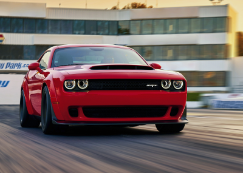
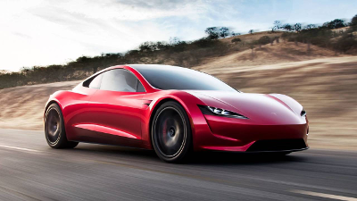

Nowe BMW! - 02.04.2018
Podczas Pokazu Samochodowego w Genewie na stoisku BMW uwagę wszystkich przykuwa koncepcyjne M8 Gran Coupé. Wygląda agresywnie, nieco wulgarnie, ale takie właśnie ma być drogie i szybkie BMW łączące luksus ze sportowym charakterem.  Tą bestią dopiero co zaprezentowano podczas nowojorskiego salonu samochodowego, a już może poszczycić się rekordem Guinnessa. Jej przyspieszenie jest druzgocące i nie każdy będzie w stanie je znieść. Takiego auta jeszcze nie było! Rozwija 840 KM i moment obrotowy 1044 Nm! Przyspieszenie do prędkości 60 mil na godzinę, czyli 96,56 km/h trwa tylko 2,3 sekundy. To najmocniejsza "911-tka" z wolnossącym silnikiem (czyli bez turbo). Napędza ją silnik 4-litrowy, 6-cylindrowy typu bokser, o mocy 520 KM zapewniający fantastyczne osiągi: przyspieszenie do "setki" w 3,2 sekundy i prędkość maksymalną 312 km/h! To najmocniejsza "911-tka" z wolnossącym silnikiem (czyli bez turbo). Napędza ją silnik 4-litrowy, 6-cylindrowy typu bokser, o mocy 520 KM zapewniający fantastyczne osiągi: przyspieszenie do "setki" w 3,2 sekundy i prędkość maksymalną 312 km/h!  Tesla Motors raz jeszcze zadziwiła cały motoryzacyjny świat. Elon Musk zaprezentował właśnie nową Teslę Roadster. Z przyspieszeniem na poziomie 1,9 s do 100 km/h to "najszybsze produkcyjne auto świata". Samo auto zostało wycenione na równe 200 000 dolarów, czyli ok. 720 tysięcy złotych, niestetu będzie możliwe do zakupu dopiero w 2020.